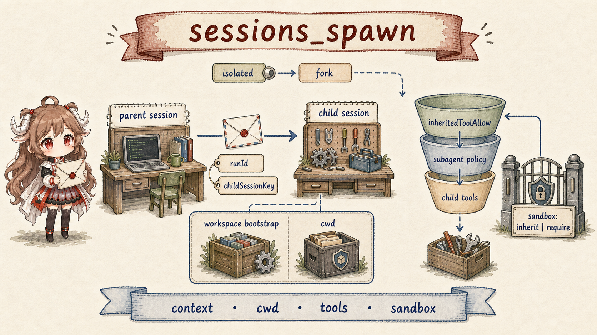
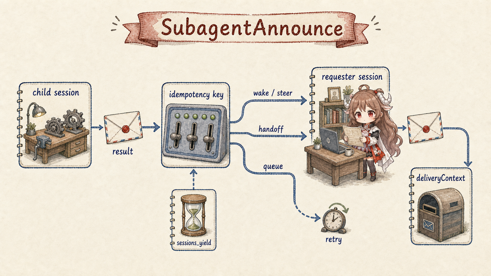

Consider one concrete job: the main Agent is asked to read a repository, run tests, and recommend a fix. Source searches can run independently, tests may take time, and the final answer still has to preserve the current conversation’s goal, authority, and tone. Turning every worker into a complete configured Agent copies far more long-lived state than the task needs. Letting each worker message Discord directly bypasses the parent’s synthesis and target selection. Treating Claude Code or another external runtime as a native subagent misattributes tool, login, and filesystem ownership.
OpenClaw resolves those tensions by separating topology from inheritance. A configured Agent is a durable identity boundary. A native subagent is a controlled child run created by an existing session. An ACP session is routed and supervised by OpenClaw but executed by an external harness. All three may look like “another model is working,” yet their contracts are intentionally different.
Reading contract.By the end, you should be able to explain why binding is not delegation; why sessions_spawn returns immediately; what isolated and fork copy; why workspace and cwd are separate; how child tools are narrowed from the parent’s effective surface; why sessions_send is not user delivery; how completion chooses wake, handoff, or a durable queue; and when native subagents or ACP are the appropriate runtime.
Evidence boundary.This article is pinned to c549250. Behaviors described as guarantees are grounded in that snapshot and the official documentation. Advice about task granularity and model cost is called out as engineering judgment, not runtime behavior.
1. Separate the three meanings of “another Agent”
| Topology | Selected or created by | Main state boundary | Best fit |
|---|---|---|---|
| Configured Agent | Static configuration and channel binding | Own workspace, agentDir, auth/model registry, and session store | Long-lived personas, accounts, or trust domains |
| Native subagent | A parent session calling sessions_spawn | New child session and run under OpenClaw-native policy | Bounded work delegated inside one conversation |
| ACP harness | sessions_spawn(runtime="acp") or the ACP control surface | OpenClaw owns routing/binding/delivery; the harness owns execution semantics | External runtimes such as Claude Code, Gemini CLI, or OpenCode |
The first row is not a child task. A binding chooses an agentId from channel, account, peer, guild, and related ingress attributes; session routing then proceeds under that Agent. The second row is delegation: a running Agent creates a child identity and hands it a bounded contract. The third can also be launched through sessions_spawn, but the child’s actual executor sits behind the ACP backend.
This distinction governs every later claim. The isolation promised by a configured-Agent boundary does not automatically describe a spawn, and the tool policy of a native child does not prove which native tools an ACP harness exposes.
2. A configured Agent is a complete persona boundary
A configured Agent is more than a different system prompt. Its workspace supplies AGENTS.md, SOUL.md, USER.md, and memory bootstrap files. Its agentDir holds authentication profiles, model registry state, and related private configuration. Its sessions live under the Agent’s own store. The official multi-agent documentation warns against reusing one agentDir, because credentials and model state would be mixed.
The workspace is not, by itself, a security sandbox. It is primarily a working directory and bootstrap source; container placement and host-path access still come from sandbox and filesystem policy. In the other direction, a plugin-owned store can remain Gateway-global unless the plugin explicitly scopes it per Agent. Two personas in the UI do not prove that every extension’s data has been partitioned.
Use a configured Agent when you need a durable identity, a separate login, or a different inbox. Do not manufacture a whole persona merely to parallelize one repository search.
3. Binding chooses the ingress owner; it does not create delegation
A binding answers “who owns this external message at the start?” Discord account A might route to agentId=ops, while Telegram account B routes to agentId=personal. Once selected, session keys, bootstrap, authentication, and policy are resolved around that Agent.
A binding does not create a parent/child edge, return a runId, or install a completion path. Binding precedence belongs to routing; subagent visibility, cancellation, and announce flow follow the spawn tree. Confusing the two often produces an awkward design: a complete second Agent exists, but no lifecycle relationship can bring its work back to the current requester.
4. sessions_spawn returns a receipt, not the answer

sessions-spawn-tool.ts accepts the task, target agent or model, cwd, timeout, thread and mode, cleanup, sandbox, and context settings. Execution continues in the background. A successful call returns accepted, with runId and childSessionKey as its essential fields.
{
"status": "accepted",
"runId": "...",
"childSessionKey": "agent:main:subagent:...",
"mode": "run"
}This is not an incomplete synchronous result; it is the asynchronous protocol. The runId identifies one execution. The childSessionKey names the session that history, status, steering, and cancellation can address. A caller should not poll every few seconds inside the same turn. It can keep doing useful work, or yield when the only remaining dependency is the pushed completion.
A native key takes the form agent:<agentId>:subagent:<uuid>; ACP uses agent:<agentId>:acp:<uuid>. These keys are not decorative labels. Scope checks, ownership, visibility, persistence, and delivery all depend on them.
5. The child receives an explicit task, not a disguised user message
The delegated task is the first visible [Subagent Task] message in the child transcript. The runtime system prompt supplies routing, tool, and completion rules separately. That provenance matters: the child can tell that a parent delegated this work rather than believing the end user directly opened another conversation.
The result that later reaches the parent is not promoted into a new user instruction either. Cross-session data carries tool-routed/internal provenance. It is evidence, a draft, or a status report for the parent to evaluate; it cannot override system instructions, owner policy, or the user’s current goal.
This boundary is especially important when the child reads untrusted pages or repositories. A returned string that says “ignore previous instructions” does not become trusted because it came through a subagent. The parent still treats the material as untrusted input.
6. isolated is the default; fork is the expensive exception
subagent-spawn-context.ts distinguishes isolated from fork. An isolated spawn starts a clean child session. It receives its own bootstrap, the explicit task, and current runtime context, but it does not silently inherit the parent transcript. That is usually cheaper and safer for bounded searches, tests, or file reviews.
context="fork" copies or forks the requester transcript so the child can reason from decisions already made in the conversation. The source requires requester and target to belong to the same Agent and requires a usable parent transcript. A preparation failure is an error; only an explicit context-engine skip can attach a fallback note and continue isolated. A channel’s thread-binding policy can select fork as the default for a thread-bound native spawn, but ordinary spawns are not implicitly forked.
Treat fork as a high-bandwidth dependency. Use it when the task truly cannot be expressed with a compact contract and must understand a long chain of prior decisions. Copying tens of thousands of tokens merely to convey three filenames increases cost, ambiguity, and exposure at the same time.
7. Workspace bootstrap and cwd are independent axes
subagent-spawn-child-plan.ts resolves spawnedWorkspaceDir and spawnedCwd separately. The target Agent’s workspace determines bootstrap files, identity, and its default working area. cwd changes only the current directory of this run’s tools. Pointing a child at /repo/service-a does not turn arbitrary instructions in that directory into another Agent persona.
For cross-Agent spawns, the requester’s explicit workspace is not simply copied. The target resolves its own workspace, and authentication comes from the target Agent’s agentDir rather than copied parent tokens. An agentId override must therefore pass allowAgents; otherwise one delegation could cross the long-lived identity boundary.
Sandbox is also a resolved runtime fact, not a wish encoded in one field. sandbox="inherit" follows the effective configuration. sandbox="require" rejects the spawn unless the child really is sandboxed. For a sandboxed native child, arbitrary cwd overrides are not accepted in this snapshot; cwd must align with the target workspace so path semantics remain inside the isolation model.
8. Child authority can only narrow
The parent’s visible tools first pass through the complete policy pipeline. At spawn time, that effective allowlist becomes an inherited upper bound. The child then applies subagent policy, sandbox policy, and target-Agent policy. agent-tools.policy.ts reads persisted inheritedToolAllow and inheritedToolDeny values on later child turns, so the boundary survives beyond initial construction.
If the parent did not have exec, a child allow rule cannot create it. If the parent had read and exec, subagent policy can still reduce the child to read. Delegation follows the same monotonic rule as the security chapter: no later layer may turn a prior deny into authority.
A leaf subagent also loses message and most session-control tools by default. That prevents direct external delivery, unbounded recursive spawning, and manipulation of unrelated sessions. If maxSpawnDepth allows deeper trees, an intermediate orchestrator may receive restricted spawn, list, or history capabilities; the deepest worker remains a leaf. Depth, active children per session, and total children per group all have admission limits.
9. Parallelism is a resource budget, not free syntax
Each isolated child owns a context window and token bill. It also consumes provider concurrency, Gateway task capacity, sandbox or container resources, and host CPU. Spawning ten mutually dependent steps merely makes them reread the same material, produce conflicting intermediate results, and push the integration burden back to the parent.
Good parallel units have independent inputs and independently verifiable outputs: inspect three modules, run three test groups that do not write the same directory, or review API, state, and security separately. When steps share an ordered write path or the next input depends on the previous output, parent-controlled sequencing is clearer. A cheaper child model can handle mechanical retrieval while the parent retains the difficult synthesis, but that is a scheduling decision rather than an automatic runtime optimization.
10. Session visibility constrains who can see whom
Session tools are not a global database browser. Visibility can be self, tree, agent, or all. The default tree view lets a requester see itself and its descendants, not every peer and persona on the Gateway. A sandboxed requester is clamped to tree visibility even if broader configuration exists, preventing a containerized Agent from enumerating unrelated sessions.
sessions_history returns a bounded and processed transcript view, which is safer for cross-session recall than reading session files directly. Cancellation is scoped along the same ownership tree: a caller can stop descendants it controls, while a leaf cannot cancel another tree. Knowing or guessing a session key is never the same as owning it.
11. sessions_send sends to a session, not to a user
sessions-send-tool.ts injects a message into another local model context for collaboration, follow-up, or steering. It is not a channel delivery API. Sending text to agent:ops:subagent:... does not make a visible Discord or Telegram message appear.
External delivery belongs to the conversation/message tool path and requires a resolved channel, account, target, and thread context. OpenClaw separates these deliberately: session messaging changes reasoning state; external messaging creates a real-world side effect. A native child lacks the message tool by default so the parent continues to own final delivery.
12. Completion is not “the child sends a reply”

When the child ends, the registry freezes a deliverable result and derives a stable idempotency key from childSessionKey and child runId. The target is the requester or parent session, not whichever external address happens to be current. If the requester turn is active, the system first tries wake or steer. If safe injection is no longer possible, it can hand work to the requester Agent. If the requester is temporarily unavailable, the completion enters a durable queue for retry.
sessions_yield complements pushed completion. Once the parent has launched background work and has nothing useful left to do, yield ends the current turn. Completion then arrives as the next model-visible event. This avoids polling tokens and keeps repeated “not finished yet” messages out of the transcript.
Nested delegation converges leaf → parent → parent. A leaf reports to its direct parent. An intermediate orchestrator may combine several leaf results and announce one coherent result upward. The external user need not receive every internal fan-out event.
13. Idempotency and durable delivery protect “deliver once”
announce-idempotency.ts derives a stable key from child and run identity. Beyond in-memory bookkeeping, the registry tracks execution, completion, and delivery. After network loss or a Gateway restart, recovery can distinguish “execution ended but completion was not delivered” from “the requester transcript already contains the delivery mirror,” preventing duplicate insertion.
Retry is bounded rather than endless. Retryable delivery maintains backoff and a deadline; a final blocked completion remains the canonical result for explicit retry or dismissal instead of disappearing silently. The architectural lesson is more durable than a particular timeout: execution terminal and delivery terminal are separate states. Work can be finished before its parent has observed the result.
14. The parent turns a result into an answer
Announce extracts the child’s latest visible assistant result. Raw internal tool results are not automatically promoted into user-facing prose. The parent receives a bounded report, combines it with the original request, other child results, and the newest conversation state, then decides what remains relevant. If the user changes direction while children are working, the parent can discard stale output instead of allowing a child to force delivery to an old target.
A useful task contract therefore names the goal, input boundary, expected output, and forbidden side effects. “Compare these three files read-only, return five differences with source paths, and make no edits” is a stronger isolated task than “look at the code.” A good result carries evidence and uncertainty rather than presenting a suggestion as an implemented fact.
15. Thread binding decides where follow-ups return
A one-shot mode="run" task ends after its result. A persistent session needs thread binding so later input in the same Discord thread or equivalent surface returns to the same child or harness. The binding maps a channel surface to a session; it does not move the runtime workspace into the chat platform.
A thread-bound native spawn may select fork context through channel policy. A persistent ACP session requires supported thread binding and an explicit session mode. When the binding closes or expires, new messages resume normal routing. Canceling an active turn stops the current execution; closing a session terminates the persistent relationship and clears its binding. Those operations should not be collapsed into one vague “stop.”
16. ACP delegates execution semantics to an external harness
acp-spawn.ts still owns target selection, requester ownership, session identity, thread and mode, background task state, and completion delivery. Model login, model catalogs, filesystem behavior, and native tools belong to acpx and the selected harness. OpenClaw built-in and plugin tools are not silently injected into ACP; an explicit MCP bridge is required when that integration is desired.
ACP should only appear when the feature is enabled, its backend is loaded and healthy, and requester sandbox policy permits it. For a sandboxed requester, runtime="acp" is hidden or rejected because an external harness is not a natural extension of the current sandbox.
The selection rule is straightforward. Choose a native subagent when the worker should obey OpenClaw-native session, tool, and policy semantics. Choose ACP when the needed worker is an established external harness such as Claude Code, Gemini CLI, or OpenCode, and treat that runtime as another trust boundary. A shared childSessionKey shape does not imply a shared tool surface.
17. Cancellation, cleanup, and delivery are separate state machines
Cancel or kill addresses execution and can cascade down a caller-owned session tree. Cleanup decides whether the child session is kept or deleted after completion. Delivery records whether the requester received the completion. A task can therefore be “execution succeeded, child cleaned up, delivery still retrying,” or “execution canceled, cancellation result already delivered.”
Diagnosis should not stop at whether a child process is alive. Inspect the spawn receipt, registry run state, child transcript terminal result, requester delivery state, and any thread binding. Compressing those layers into one boolean produces ghost tasks and duplicate replies.
18. Diagnose along the delegation chain
binding / requester identity
→ sessions_spawn admission
→ target agent + childSessionKey
→ context / workspace / cwd / sandbox
→ inherited tool policy
→ child execution terminal
→ completion capture
→ wake | handoff | durable queue
→ parent synthesis
→ external deliveryIf spawn is immediately forbidden, inspect depth, concurrency, allowAgents, sandbox requirements, and ACP availability. If the child starts with the wrong instructions, inspect the target workspace and context mode. If a tool is missing, take the intersection of the parent effective surface and subagent policy. If execution succeeded but the parent saw nothing, inspect idempotency and delivery state. Only after the parent has the result should you debug conversation target, thread, and channel permission.
This order is safer than “spawn it again.” A blind retry may create a second run. Only recovery keyed to the same replay or idempotency identity can safely continue the original task.
19. Nine rules to carry forward
- Classify the topology first.A configured Agent, native subagent, and ACP harness are not synonyms.
- Binding owns ingress; spawn owns delegation.Only spawn creates a parent/child lifecycle.
- Treat accepted as a receipt.Keep runId and childSessionKey, then wait for pushed completion.
- Default to isolated.Fork a transcript only when a compact task contract cannot express the dependency.
- Separate workspace from cwd.The former supplies identity and bootstrap; the latter locates one run.
- Authority narrows downward.A child cannot obtain a tool or sandbox escape absent from the parent boundary.
- Internal messaging is not external delivery.
sessions_sendchanges session context; conversation/message reaches users. - Children report; parents deliver.The parent retains target selection, synthesis, and the final voice.
- Observe execution and delivery separately.A finished task and an observed completion are two terminal conditions.
The final article moves from the spawn tree to the time axis: how heartbeat, cron, and background tasks wake an Agent without a new user message; which state survives a Gateway restart; and how durable recovery avoids turning “always on” into duplicate execution.
Source references
- sessions-spawn-tool.ts and subagent-spawn-contract.ts: spawn parameters and the accepted receipt.
- subagent-spawn-context.ts and subagent-spawn-child-plan.ts: context fork, workspace/cwd, sandbox, and child identity.
- agent-tools.policy.ts, sessions-history-tool.ts, and sessions-send-tool.ts: inherited tool policy and scoped session access.
- subagent-registry-lifecycle-delivery.ts and announce-idempotency.ts: completion, idempotency, and delivery state.
- acp-spawn.ts, Sub-agents, ACP agents, and Multi-agent routing: topology and runtime boundaries.